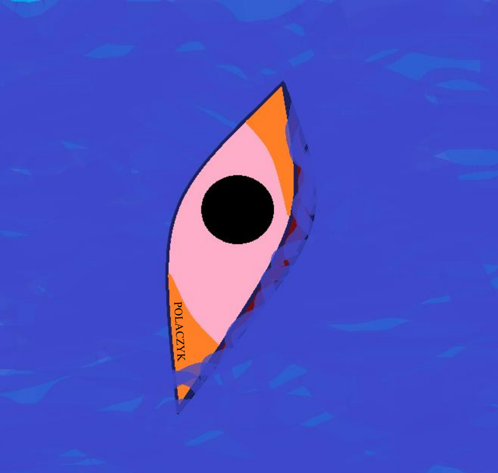

Polaczyk
Човни Polaczyk, такі як моделі Flash 2, Hussarya 3 та Shift, відомі своєю високою маневреністю, швидкістю та стабільністю, що є ключовими перевагами для спортсменів у слаломі. Виробництво здійснюється з використанням сучасних композитних матеріалів і технологій, таких як вакуумна інфузія та «ISMT» (спеціальна технологія, розроблена Polaczyk Kajak Sport), які забезпечують міцність і стійкість човнів. Деякі моделі, наприклад, Flash 2, були спроектовані з урахуванням вимог до високої швидкості та керованості, що допомагає спортсменам досягати максимальних результатів. Hussarya 3 має модифіковану форму корми, яка підвищує швидкість і покращує відштовхування, що допомагає при маневрах на воді. Shift, ще одна популярна модель, є покращеною версією попередніх човнів з підвищеною стабільністю для легкого виконання поворотів на високій швидкості. Ці човни доступні в різних конструкційних категоріях – від бронзової до платинової, з варіантами міцних і легких матеріалів, включаючи карбон і навіть титан для зниження ваги, що робить їх придатними для міжнародних змагань найвищого рівня.
